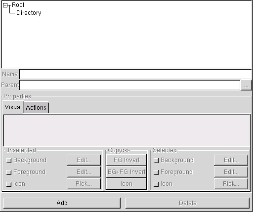
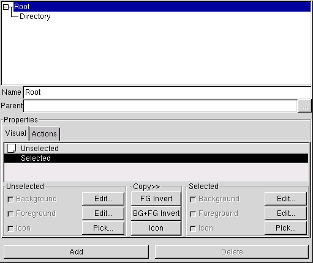

|
|
| LICENSE | NOTES | GUIDE | INTRO | USAGE | CONFIG | HISTORY | CONTRIBUTING | ACKS |
You use file styles to control the way files of different types are displayed and generally dealt with. For more information about styles and their various properties, the tree structure applied to styles, and all other fun details, check out the styles chapter!
Configuring styles is important in order to get gentoo to look the way you want it to, and also to act the way you want it to.
Here's two (cropped) pictures how what the file styles configuration page looks like. The picture to the left shows the page as it looks when no style has been selected, while the right hand picture shows it with a style ("Root") selected.


The dominant part of the style page is taken up by a single widget; a display of the style tree. The tree widget is hopefully more or less selfexplanatory; it shows the different styles and the parent-child relationships between them. You can click on the (tiny) boxes to the left of an item to show or hide its children. The default is to expand the tree fully, showing all styles.
The styles are listed in alphabetical order on each tree level, to make finding a certain style a little easier.
Right below the tree view, there's a text entry widget labeled "Name". Not surprisingly (I hope), that's where you enter the name of the style. The name of a style must always be unique, since the name is used to link styles to types. When you edit the style name, gentoo will ignore any changes that make the name a duplicate, keeping the last unique name. This might seem confusing, but chances are you'll never even notice it.
Under the name entry widget, there's another text entry widget, this time labeled "Parent". Unlike the name, you can't edit the parent name directly; the widget is used just to display the name. To change the parent of a style, click the tiny button labeled with the ellipsis. This will open up a dialog window where you can choose a new parent style. None of the current style's children will be in the dialog, of course. Once you change the parent, the tree display changes to reflect the new hierarchy.
The rest of the page is taken up by a big frame labeled "Preperties". It gives you a chance to edit and view the style's properties. Properties are inherited from parent to child, so when editing a style high up in the hierarchy, the changes might be visible far down. You can always click on a style to see its current property values.
Each property has a check button; if the button is active (I would say "checked", but GTK+ doesn't render check buttons with check marks in them), that means that the property in question is being overridden by the current style; i.e. the parent's value is not being used. When a property is overridden, the style provides its own value for the property. When you deactivate an override check button, the style reverts to using its parent's value for the property in question.
In the right picture above, you can see that all the check buttons are indeed active, but also that they are "insensitive"; you can't manipulate them. This is simply because the style selected is the root style; it must always override all properties, since it has no parent to inherit values from.
There are 6 different visual properties, divided into two groups: unselected and selected. Since the meaning and use of these has been covered in the styles chapter, I won't repeat that here. I'll just tell you what you can do when configuring a style's visual properties.
The list containing the rows "Unselected" and "Selected" is the style preview. It shows how the current visual property values would look in a pane. The preview is not interactive.
Below the preview are two sets of property editing frames; one for the unselected state and one for the selected. Each frame contains widgets to control override and value of the three state-specific properties (background and foreground colors, and icon).
To set a color property, first make sure its override button is active. When active, the "Edit..." button becomes available. Clicking it opens up the GTK+ standard color selection window. Manipulate the widgetry in this window until you find a color you like, and accept the changes by clicking the "OK" button. While manipulating, watch the preview as it updates to show an accurate preview.
To set an icon property, click the "Pick..." button (after making sure that the style being edited actually does override the property in question, of course). This brings up (after a small delay during which you get to view a nice progress indicator) an icon selection window. Select an icon and click OK, and the style is modified. It's as simple as that. Currently, there's no "active preview" while choosing icons, but you really shouldn't need one IMO.
Between the unselected and selected property frames is a narrow frame labaled "Copy>>". It contains some buttons that can be used to perform often-wanted operations a bit faster. The buttons are:
Again, the concept of action properties has been explained in the styles chapter, here we'll concentrate on how you go about setting them to values you like. The first thing you need to do is access the action properties notebook page; you do this by clicking the tab labeled "Action". The display then changes to look something like this.
The action property notebook page contains one row for each available action property. To
the left is a check button which you use to control override, as usual. Next on the row comes
a simple "preview" of the action command sequence; it'st just a list of commands. Not very
useful, but I wanted to put something there, to fill out the window a bit. ;^)
The last thing on the row is an "Edit" button, which when pressed brings up the standard
command sequence editor.
That's basically it.
Of course, style editing wouldn't be so interesting if you only had the two styles shown in the screenshots here to work upon. Of course, you want to add your own styles, and experiment.
To add a new style to the tree, click the "Add" button (surprise!). If no style was selected when you clicked, the new style will be added with "Root" as its parent. If a style was selected, it will be used as the parent. The new style appears in the tree under the temporary name "(New Style") or something similar; make sure you change this to your wanted, unique, name as soon as possible.
To delete a style, select it in the tree, then hit the "Delete" button. If the style selected is a parent, a dialog box will appear requesting you to confirm that you really want to delete it, since deleting a parent style deletes all the children too! Beware. Of course, you cannot delete the Root style.
{kind=link}
{kind=link}
{kind=link}